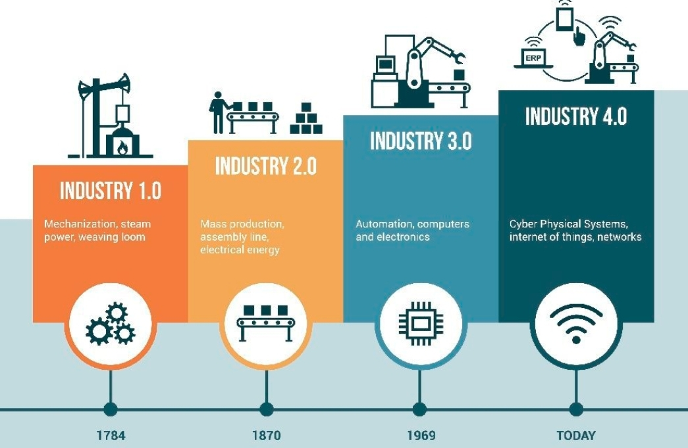
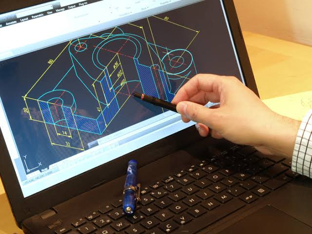
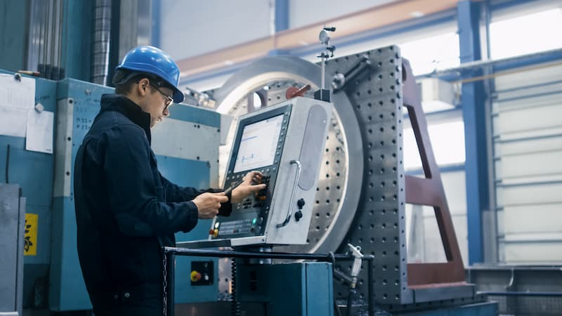
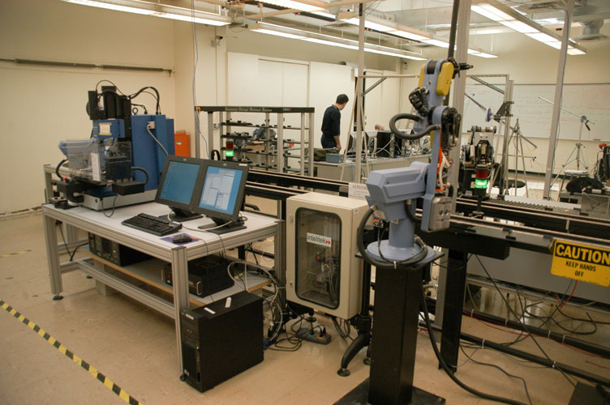
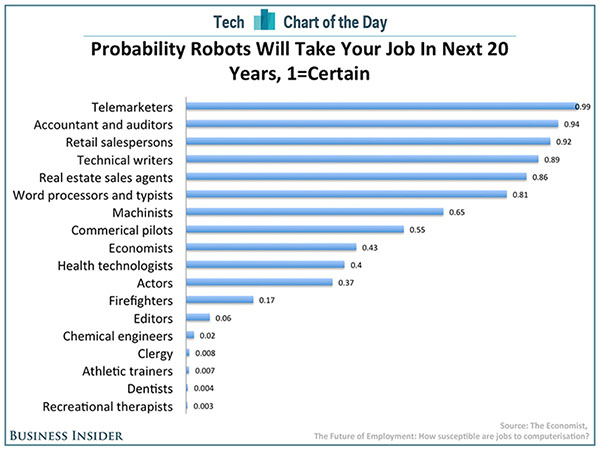

<!DOCTYPE html>
<html lang="en">
<head>
	<meta charset="UTF-8">
	<meta name="viewport" content="width=device-width, initial-scale=1.0">
	<title>Peretemuan_6</title>
	<link rel="stylesheet" href="style.css">
</head>
<body>
	<div class="navigation">
		<div class="prev">
			<a href="">
				<h4>Prev - Pertemuan_5</h4>
			</a>
		</div>
		<div class="next">
			<a href="">
				<h4>Next - Pertemuan_7</h4>
			</a>
		</div>
	</div>
	<div class="container">
		<div class="judul">
			<h2>PERTEMUAN 6</h2>
			<h2>KOMPUTER DAN INDUSTRI</h2>
		</div>
		<h3>TUJUAN PEMBELAJARAN</h3>
		<p>Setelah mengikuti materi pada pertemuan ke-6 ini mahasiswa mampu
			mengetahui perkembangan teknologi robotik yang digunakan di berbagai industri.
		</p>
		<h3>URAIAN MATERI</h3>
		<div class="materi">
		<ol type="1">
			<li class="sub-judul">Revolusi Industri</li>
			<p>Kebiasaan daripada kehidupan masyarakat dan begitu cepatnya 
				perkembangan teknologi, sehingga membuat perubahan pada gaya hidup dan 
				cara kerja manusia membuat kehidupan digital menjadi dampak pada semua 
				bidang disiplin ilmu, merupakan revolusi industri. Pesatnya perkembangan 
				teknologi informasi membuat terjadinya beberapa terobosan, yakni diantaranya 
				ialah pada bidang yang disebut dengan kecerdasan buatan, disiplin ilmu 
				tersebut merupakah sebuah disiplin ilmu dimana teknologi yang diciptakan 
				merupakan adopsi dari keahlian seseorang yang dituangkan ke dalam suatu 
				aplikasi yang memudahkan proses produksi dengan otomatis.
			</p>
			<div class="cabang-materi">
				<ol type="a">
					<li>Industri 1.0 </li>
					<p>Dipertemukannya mesin uap dan air untuk membantu para pekerja, sekitar 
						tahun 1800-an, dengan adanya mesin air dan uap yang dipergunakan dapat 
						membantu para pekerja.</p>
					<li>Industri 2.0</li>
					<p>Industri 2.0 ditemukannya energi listrik, tentunya penggunaan listrik lebih 
						efektif apabila dibandingkan dengan tenaga uap dan air.</p>
					<li>Industri 3.0</li>
					<p>Industri 3.0 ditandai dengan ditemukannya perangkat elektronik. Pada 
						pembuatannya melahirkan sistem dengan perangkat lunak yang
						memanfaatkan pera
					ngkat keras elektronik.</p>
					<li>Industri 4.0</li>
					<p>Pada industri 4.0, penggunaan internet menjadi lebih pesat, mesin-mesin 
						dapat berjalan menggunakan media internet untuk segala aktifitasnya 
						seperti penggunaan e-toll. Pada pabrik-pabrik juga saat ini sudah 
						menggunakan tren otomasi yang bisa melakukan pertukaran data dalam 
						teknologi yang ada di pabrik tersebut semua secara online.</p>				
				</ol>				
			</div>
			<p>Banyak perubahan yang terjadi dan sangat besar mempengaruhi 
				kehidupan manusia. Karena, hampir semua bidang yang mencakup kehidupan 
				sudah menggunakan teknologi dari industi 4.0 ini. Perubahan dirasakan oleh 
				masyarakat sangat masif, dimana masyarakat harus mulai merubah pola pikir 
				hingga pola kerja mereka. 
			</p>
			<p>Salah satu design industri 4.0 yang sangat terasa oleh masyarakat 
				adalah berkembangnya IoT. IoT (Internet of Things) mulai digunakan dalam 
				industri 4.0 saat ini. Dimana mesin memiliki kemampuan yang dapat terhubung 
				dengan mesin lainnya hanya dengan menggunakan fasilitas internet. Singkatnya prinsip pindustri.4.0 menurut Hermann dkk (2016) seperti gambar dibawah ini.
			</p>
			
			<p>Jadi dalam revolusi industri 4.0 ini gabungan daripada sistem keamanan 
				yang lebih baik, Internet of Things dan jaringan internet menjadi aspek utama 
				dalam revolusi ini, atau biasa disebut sebagai revolusi digital. Semua bidang 
				saat ini telah beralih ke revolusi ini, dimana semua kegiatannya berhubungan 
				dengan kecerdasan buatan.
			</p>
			<li class="sub-judul">Otomasi Industri</li>
			<p>Merupakan revolusi yang memiliki potensi untuk mempercepat proses 
				produksi baik secara kualitas maupun kuantitas yang dapat dikerjakan oleh 
				mesin. Jadi dalam penggunaannya mesin akan dirasa dapat bekerja lebih cepat 
				daripada dengan tenaga kerja manusia. Otomasi industri ini menjadi bahasan 
				yang sangat penting dalam dunia industri, karena ini berkaitan dengan tenaga 
				kerja. Manusia harus benar-benar memahami kondisi seperti ini, bukan berarti 
				segala kehidupan akan diganti oleh mesin, namun manusia harus bersiap agar 
				dapat mengendalikan mesin, agar mesin tersebut dapat bekerja dengan 
				semestinya. 
			</p>
			<li class="sub-judul">Struktur Robotik</li>
			<p>Saat ini robot di dunia industri sudah digunakan untuk proses produksi. 
				Strukturnyapun berbeda-beda, ada yang berbentuk hanya berupa tangan atau 
				pencapit. Dimana strukturnya terdiri dari :
			</p>
			<div class="cabang-materi">
				<ol type="a">
					<li>Manipulator</li>
					<p>Penggerak badan robot seperti dapat memutar, mencapit, dan sebagainya.</p>
					<li>Kontroler</li>
					<p>Merupakan peralatan yang bertugas untuk mengendalikan alur kinerja robot.</p>
					<li>Power Daya (Power Supply)</li>
					<p>Berguna untuk memberikan tenaga agar mesin atau robot dapat bergerak.</p>
					<li>End Effector</li>
					<p>Sebagai kelengkapan daripada kebutuhan untuk melakukan operasi 
						tertentu pada suatu obyek.</p>					
				</ol>				
			</div>
			<p>Dalam dunia industri robot digunakan sebagai alat ganti manusia yang 
				butuh ketelitian tinggi dan waktu yang cepat dalam mengerjakan pekerjaan, 
				adapun manfaat pengunaan robot dibidang industri adalah sebagai berikut:
			</p>	
			<div class="cabang-materi">
				<ol type="a">
					<li>Meningkatkan kualitas produk.</li>
					<li>Meningkatkan management produksi.</li>
					<li>Meningkatkan jumlah produksi.</li>
					<li>Menghemat sumber daya.</li>
				</ol>				
			</div>
			<li class="sub-judul">Jenis – Jenis Penggunaan Komputer dalam Bidang Industri</li>
			<div class="cabang-materi">
				<ol type="a">
					<li>CAD (Computer Aided Design)</li>
					<p>Merupakan komputer yang dikatakan dapat menggantikan meja 
						gambar sebagai alat bantu untuk menggambar. Aplikasi ini sudah 
						mendukung tampilan 3 dimensi. Dalam penggunaannya aplikasi ini 
						digunakan untuk melakukan design gambar untuk media promosi dan 
						sebagainya.
					</p>
					
					<li>Komputer-Aided Manufacturing (CAM)</li>
					<p>Jenis komputer ini digunakan untuk membantu mengoperasikan 
						mesin produksi dalam skala yang besar terutama dalam proses produksi 
						bahan mentah yang diolah hingga menghasilkan produk jadi agar 
						pengerjaannya menjadi lebih cepat. Biasa jenis produk ini digunakan oleh 
						produksi dalam skala yang sangat besar.
					</p>
					
					<li>Manufacturing Resource Planning (MRPII)</li>
					<p>Biasanya komputer jenis ini digunakan dalam bidang industri untuk 
						membuat suatu rancangan sumber daya produksi skala besar. Tentu bukan 
						hal yang sangat sepele untuk membangun atau merancang suatu sumber 
						daya produksi, karena segalanya harus dipikirkan secara matang. Dengan 
						adanya komputer dalam jenis ini dapat memudahkan dalam membuat suatu 
						perencanaan secara terencana dan terstruktur dengan baik.</p>					
					<li>Computer Integrated Manufacturing (CIM)</li>
					<p>Komputer manufaktur terintegrasi (CIM) adalah pendekatan 
						pembuatan menggunakan komputer untuk mengontrol seluruh proses 
						produksi. Integrasi ini memungkinkan proses individu untuk pertukaran
						informasi dengan satu sama lain dan melakukan tindakan. Melalui integrasi 
						komputer, manufaktur dapat lebih cepat dan kurang rawan kesalahan, 
						meskipun keuntungan utama adalah kemampuan untuk membuat proses 
						manufaktur otomatis. Biasanya CIM bergantung pada proses kontrol loop 
						tertutup berdasarkan input real time dari sensor, ia juga dikenal sebagai 
						desain yang fleksibel dan manufaktur. Elemen CIM adalah design dan 
						manufakturing, dimana manufakturing melengkapi perencanaan produksi, 
						pengendalian produksi dan proses produksi.
					</p>
					
					<p>Perhatian utama adalah bagaimana komputer digunakan sebagai 
						suatu sistem konseptual dicampur dengan aplikasi dalam sistem fisik oleh 
						suatu konsep yang disebut computer integrated manufacturing (CIM). 
						Kombinasi dari aplikasi yang terpisah, seperti CAD (CAD), manufaktur 
						komputer dibantu (CAM), robotika.
					</p>
				</ol>
			</div>
			<li class="sub-judul">Kegunaan Komputer di Bidang Industri</li>
			<p>Dengan adanya teknologi dalam dunia industri sangat membantu 
				pekerjaan manusia karena lebih efektif dan efisien. Serta dalam dunia industri, 
				komputer dapat membantu pekerjaan manusia dalam mengendalikan produksi 
				massal atau produksi yang besar. Beberapa aspek Komputer dimanfaatkan pada bidang industri yakni 
				pada aspek :
			</p>
			<div class="cabang-materi">
				<ol type="a">
					<li>Aspek produksi</li>
					<p>Dalam aspek produksi, terutama pada produksi berskala besar tidak 
						memungkinkan apabila dilakukan secara manual. Dengan adanya komputer 
						proses produksi akan lebih cepat dibanding kekuatan, kecepatan dan 
						ketepatan manusia, karena semua proses pekerjaan akan menggunakan 
						sistem komputerisasi.
					</p>
					<li>Aspek pegemasan</li>
					<p>Proses pengemasan sangat penting dalam dunia produksi, dimana 
						sangat mempengaruhi daya jual sebuah produk. Komputer sangat 
						dibutuhkan untuk pembuatan desain suatu produk, agar tampilan produk 
						yang dijual terlihat menarik.
					</p>
					<li>Aspek distribusi dan promosi</li>
					<p>Cara pendistribusian dan promosi yang unik dan kreatif sangat 
						menarik masyarakat untuk membeli sebuah produk. Dengan adanya 
						komputer promosi sebuah produk akan lebih mudah. Diantaranya promosi 
						dapat dilakukan dengan menggunakan situs web maupun blog. Pembuatan
						iklan yang menarik menggunakan komputer dipercaya hasilnya cukup 
						maksimal.
					</p>
					<li>Aspek administrasi</li>
					<p>Kegiatan administrasi dalam sebuah industri akan lebih mudah jika 
						menggunakan komputer, diantaranya :
					</p>
					    <ol type="square">
					    	<li>Dalam kegiatan surat menyurat amat sangat mudah dilakukan 
								menggunakan komputer, contohnya surat kontrak kerja dengan industri 
								lain.</li>
							<li>Membuat akumulasi dana atau laporan keuangan, laporan gaji 
								karyawan, dsb.</li>
					    </ol>
					<p>Semua aspek di atas berkaitan dengan pengelolaan laporan yang 
						menjadi sangat mudah bagi industri, karena pembuatan laporan menjadi 
						lebih mudah karena adanya bantuan dari komputer yang sudah terintegrasi. 
						Kemudian laporan-laporan tersebut dapat disimpan sebagai bentuk arsip 
						perusahaan yang bersifat rahasia dan aman. 
					</p>					
				</ol>			
			</div>
			<li class="sub-judul">Dampak Negative Penggunaan Komputer dalam Bidang Industri</li>
			<p>Walaupun banyak kegunaan komputer di bidang industri, ada pula 
				dampak negatif yang ditimbulkan akibat penggunaan komputer dibidang 
				industri, antara lain :
			</p>
			<div class="cabang-materi">
				<ol type="a">
					<li>Biaya perawatan dan pemeliharaan mesin dan robot dalam bidang industri 
						relatif mahal.</li>
					<li>Mengurangi kesempatan kerja.</li>
					<li>Pemborosan energi.</li>
					<li>Kurangnya sumber daya manusia yang mampu mengontrol dan 
						menjalankan alat – alat berteknologi canggih.</li>
					<li>Terjadinya penganguran bagi tenaga kerja yang tidak mempunyai kualitas 
						yang sesuai dengan yang dibutuhkan.</li>
					<li>Bersifat konsumtif sebagai akibat kompetensi yang ketat pada era 
						globalisasi juga melahirkan generasi yang secara formal mengalami 
						pemerosotan.</li>					
				</ol>				
			</div>
			<li class="sub-judul">Peluang dan Tantangan Industri 4.0</li>
			<p>Revolusi industri 4.0 membuka peluang yang luas bagi siapapun untuk 
				maju. Teknologi informasi yang semakin mudah terakses hingga ke seluruh 
				pelosok menyebabkan semua orang dapat terhubung di dalam sebuah jejaring 
				sosial. Banjir informasi seperti yang diprediksikan Futurolog Alvin Tofler (1970) menjadi realitas yang ditemukan di era revolusi industri saat ini. Informasi yang 
				sangat melimpah ini menyediakan manfaat yang besar untuk pengembangan 
				ilmu pengetahuan maupun perekonomian. 
			</p>
			<p>Jalaluddin Rakhmat (1997:6) membagi era informasi kedalam lima 
				karakteristik, yaitu Kekayaan, Teknosfer, Infosfer, Sosiosfer, dan Psikosfer. 
				Karakteristik informasi sebagai kekayaan menunjukkan bahwa informasi yang 
				diterima dan dikuasai seseorang dapat dimanfaatkan untuk sarana akumulasi 
				kekayaan atau sumber komersialisasi. Dalam konteks ini, alumni atau 
				mahasiswa dapat mempromosikan hasil kreasinya kepada publik melalui 
				jejaring media sosial untuk mendapatkan tanggapan atau respon sehingga 
				dapat dijadikan ukuran untuk memperbaiki dan meningkatkan kualitas 
				produknya. Telah banyak kisah sukses pengusaha-pengusaha muda atau 
				bahkan ibu rumah tangga dalam menjalani bisnis mereka dengan 
				memanfaatkan teknologi informasi khususnya media sosial. Kunci kesuksesan 
				mereka adalah menjual produk inovatif, menjaga kualitas dan kepercayaan 
				konsumen, dan tentu saja kreatif.
			</p>
			<p>Karakteristik informasi yang kedua adalah teknosfer atau pola 
				lingkungan teknologi. Masyarakat di era revolusi industri 4.0 memiliki 
				ketergantungan yang sangat besar dalam menggunakan teknologi informasi. 
				Sebuah survey pada tahun 2014 dilakukan oleh Nokia menemukan temuantemuan yang mengejutkan mengenai tingkat ketergantungan manusia terhadap 
				teknologi. Pertama, rata-rata hampir setiap enam setengah menit seseorang 
				mengecek ponselnya. Bahkan dalam waktu 16 jam saat orang beraktivitas, 
				mereka melakukan 150 kali per hari untuk memerika ponsel mereka.
			</p>
			<p>Infosfer atau bentuk lingkungan informasi merupakan karakter ketiga 
				dari era informasi. Daya jangkau teknologi informasi tidak hanya berskala 
				lokal tetapi hingga skala global. Melalui internet, akses informasi dapat 
				dijangkau hingga ke berbagai penjuru dunia. Fakta ini menjadi peluang bagi 
				para wirausahawan muda untuk mempromosikan produk-produk kreatifnya 
				hingga ke berbagai belahan dunia. Riset yang dilakukan juga menguatkan 
				hal tersebut. Meskipun skala bisnis UMKM terbilang kecil, tetapi produkproduknya dapat dinikmati oleh pasar regional berkat dukungan teknologi 
				internet.
			</p>
			<p>Karakteristik era informasi lainnya adalah sosiosfer atau pergeseran 
				lingkungan komunikasi sosial. Dulu para guru, kyai, ulama, pendeta, birokrat 
				dan politisi memiliki pengaruh yang besar sebagai agen sosialisasi. Namun 
				saat ini, peran sosialisasi tradisional mereka telah diambil alih oleh media 
				komputer dan smartphone. Efek ketergantungan yang tinggi dalam 
				penggunaan media informasi digital telah membentuk opini setiap individu. 
				Saat ini setiap orang memiliki akses yang tinggi untuk terlibat aktif untuk 
				memberikan dan membagikan opini kepada pihak lain melalui media sosial 
				online.
			</p>
			<p>Karakteristik era informasi yang terakhir adalah psikosfer. Karakter 
				psikosfer merupakan kemampuan seseorang untuk bertahan dalam era 
				“banjir” informasi. Melimpahnya informasi tentunya tidak hanya membawa 
				pengetahuan positif tetapi juga negatif. Kemampuan seseorang untuk 
				mengolah pengetahuan (knowledge) menjadi kearifan (wisdom) dalam 
				lingkungan sosialnya akan menentukan tingkat ketahanannya di era 
				informasi. Dengan demikian, tindakan share and resharing informasi telah 
				didasari oleh nilai-nilai etis sehingga tidak akan menciptakan eskalasi 
				kegaduhan publik.
			</p>
			<p>Revolusi industri generasi keempat tidak hanya menyediakan peluang, 
				tetapi juga tantangan bagi generasi milenial. Kemajuan ilmu pengetahuan dan 
				teknologi sebagai pemicu revolusi industri juga diikuti dengan implikasi lain 
				seperti pengangguran, kompetisi manusia vs mesin, dan tuntutan kompetensi 
				yang semakin tinggi.
			</p>
			<p>Menurut Prof Dwikorita Karnawati (2017), revolusi industri 4.0 dalam 
				lima tahun mendatang akan menghapus 35 persen jenis pekerjaan. Dan 
				bahkan pada 10 tahun yang akan datang jenis pekerjaan yang akan hilang 
				bertambah menjadi 75 persen. Hal ini disebabkan pekerjaan yang diperankan 
				oleh manusia setahap demi setahap digantikan dengan teknologi digitalisasi 
				program. Dampaknya, proses produksi menjadi lebih cepat dikerjakan dan lebih 
				mudah didistribusikan secara masif dengan keterlibatan manusia yang minim. 
				Di Amerika Serikat, misalnya, dengan berkembangnya sistem online perbankan 
				telah memudahkan proses transaksi layanan perbankan. Akibatnya, 48.000 
				teller bank harus menghadapi pemutusan hubungan kerja karena alasan 
				efisiensi.
			</p>
			<p>Bahkan menurut survey McKinsey, sebuah korporasi konsultan 
				manajemen multinasional, di Indonesia sebanyak 52,6 juta lapangan pekerjaan 
				berpotensi digantikan dengan sistem digital. Dengan kata lain, 52 persen 
				angkatan kerja atau merepresentasikan 52,6 juta orang akan kehilangan 
				pekerjaan.
			</p>
			<p>Pada gambar berikut ini menunjukkan bahwa lapangan pekerjaan yang 
				potensial diotomatisasikan diantaranya usaha pengolahan (manufakturing), 
				perdagangan ritel, transportasi dan pergudangan, tenaga administrasi, 
				konstruksi, layanan makanan dan akomodasi, pertanian, perikanan, dan 
				kehutanan, serta layanan kesehatan dan keuangan/asuransi. Dengan 
				demikian, revolusi industri dapat mengancam makin tingginya pengangguran di 
				Indonesia.
			</p>
			
			<p>Namun demikian, bidang pekerjaan yang berkaitan dengan keahlian 
				Komputer, Matematika, Arsitektur dan Teknik akan semakin banyak 
				dibutuhkan. Bidang-bidang keahlian ini diproyeksikan sesuai dengan tuntutan 
				pekerjaan yang mengandalkan teknologi digital.
			</p>
			<li class="sub-judul">Isu Terkait dengan Revolusi Industri di Kalangan Masyarakat</li>
			<div class="cabang-materi">
				<ol type="a">
					<li>Apakah dengan adanya revolusi industri maka peranan tenaga kerja di 
						Indonesia akan digantikan oleh mesin?</li>
					<li>Apakah dengan adanya revolusi industri maka akan semakin banyak terjadinya 
						fenomena Pemutusan Hak Kerja (PHK) terhadap tenaga kerja?</li>
					<li>Bagaimana cara agar masyarakat siap dengan perubahan daripada revolusi 
						industri yang kemungkinan besar akan mempengaruhi kehidupan secara 
						signifikan?</li>
					<li>Apakah pemerintah akan melakukan sosialisasi kepada masyarakat yang kaget 
						dengan berlakunya revolusi industri?</li>
					<li>Apakah masyarakat telah siap menghadapi setiap perubahan daripada revolusi 
						industri ini?</li>
					<li>Bagaimana menanggulangi keterbatasan masyarakat terhadap 
						penggunaan internet, mengingat kebanyakan masyarakat di Indonesia 
						terutama yang tinggal di daerah terpencil masih belum terjamah dengan 
						jaringan internet yang bagus?</li>					
				</ol>				
			</div>
		</ol>
		</div>
	</div>	
</body>
</html>